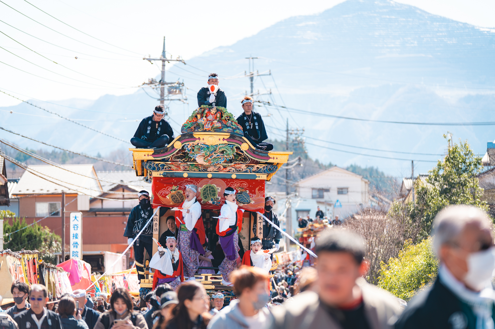
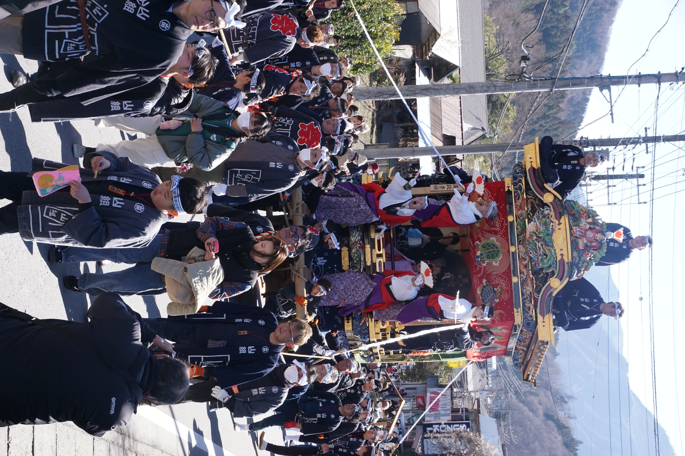

山田の春祭りとは
秩父市山田地区の恒持神社（つねもちじんじゃ）例大祭。 江戸時代から続く伝統行事で、秩父地方で一番最初に屋台が出る祭り。 毎年3月第2日曜日に開催。
秩父市指定有形民俗文化財の3基の山車が山田地区を曳き回され、 夜にはぼんぼりが灯ります。
※ スターマインはここ数年中止。復活を期待！

武甲山を背に、山田の春を告げる
山
山組
やまぐみ / 中山田
屋台
本
本組
もとぐみ / 荒木
屋台
上
上組
かみぐみ / 大棚
笠鉾
大祭当日の流れ
読売新聞 2026.3.9
山田の春祭りが読売新聞に掲載されました
祭りのチーム
保存会
山車・屋台の保存と祭りの伝統継承。 競りの収益の寄付先（令和6年〜）。 祭り全体の意思決定と管理。
青年部
45歳未満
祭りの実動部隊。 若行・世話係・各係はここから。 祭りの熱気と活力の源。

みんなで曳く。みんなの祭り。
保存会・青年部・地域のみんなで
14の係
屋台1基を動かすのに、これだけの人が関わっています。
MANAGEMENT
屋台責任者 — 最高責任者。安全と全体指揮。
総括 — スケジュール・各係の調整。
副総括 — 総括の補佐・代行。
行事 — 神事管理。半纏・鉢巻配布。
STARS
若行 — 屋台に乗る「神様」。毎年4〜5名。
世話係 — 前年の若行がサポート。
OPERATION
棟梁 — 山車の組立・解体の総責任者。
屋根係 — 屋根上で進行指示・障害物確認。
キリン係 — ギリ回し（方向転換）を担当。
ブレーキ係 — テコ棒で制動・方向調整。
芯綱係 — 中心の綱で速度・方向を制御。
反り木係 — 土台前方で進行方向を微調整。
太鼓係 — 屋台上で太鼓演奏。
神輿係 — 恒持神社〜八坂神社間の渡御。
若行ガイド
若行に選ばれたあなたへ。1月〜翌日の直会まで、全部まとめました。
着物を纏い、
屋台に乗る。
毎年4〜5名が「神様」として選ばれます。
若行 = 神様
華やかな当日だけじゃない。1月の顔合わせから始まる準備・段取り・会計・直会の主催まで全部が若行の仕事。大変だけど、終わったあとの達成感は格別。
翌年は世話係として次の若行を支える側に。だから今年の経験をしっかり残そう。
1月 — 顔合わせ・体制決定
屋台備品確認・点検（顔合わせ）
9:00-12:00 @ 5区公会堂
全組打合せ（行事・世話係・若行）
18:30-19:30 @ 恒持会館 — 若行長決定・着物・お宿の打診
お宿依頼・やぐら太鼓
18:00-19:00 / 全組若行長
2月 — 準備・会議
ぼんぼり紙の剥がし
9:00-11:30 @ 薬師様
警備推進会議
18:30-19:30 @ 恒持会館
若行激励会
19:00-21:00 @ 4区公会堂
前年若行長からの引き継ぎ
直会の段取り・予算・手配物。早めに連絡を。
3月上旬 — 太鼓慣らし・前日準備
太鼓慣らし（毎晩）
19:00-21:00 @ 4区公会堂 / 若行全員で交代
前日組立・準備
6:30〜 ぼんぼり紙貼り / 屋台運搬 / 婦人方へレクチャー / 前夜祭18時
大祭当日
恒持神社集合 → 着付・化粧 → 屋台に乗る
朝8時〜夜9時まで。全力で。
翌日 — 解体・直会
解体
朝一お茶出し / 競り人との下話 / 帰宅防止の声かけ
直会を主催 → 競り実施
@ 公会堂 / 食事・物品は事前発注 / 競り収益は山組保存会へ寄付
手配チェックリスト
しきたりと用語
ほうりゃい！
ほうりゃい！
宝来 — 宝よ来い、宝よ来い
若行が屋台の上から叫ぶ掛け声。「宝が来い」と願いを込めて、何度も何度も声を張り上げます。 この声が響くと、祭りの空気が一変する。
わっしょい！わっしょい！
掛け声とともに一気飲み。これが山田の春祭りの恒例。
「ごちそうさま」を言わないと、もう一杯来ます 😂
飲み終わったら「ごちそうさまでした！」と叫ぶこと。言い忘れると無限ループに入ります笑
※ お酒飲めない方はソフトドリンクでOK！
祭りが終われば、みんな仲間。
用語集
若行（わかぎょう）
屋台に乗る「神様」。毎年4〜5名。
世話係（せわがかり）
前年の若行が務め、現役をサポート。
宝来（ほうりゃい）
若行が叫ぶ掛け声。「宝よ来い」の意。
ギリ回し
山車の方向転換。ウマ+テコ棒+ギリ棒で回す。
ぼんぼり
屋台に飾る提灯。前日に紙を貼り、夜に灯す。
御旅所（おたびしょ）
八坂神社。午後に山車が向かう目的地。
直会（なおらい）
祭り翌日の打ち上げ。若行が主催。
競り（せり）
直会でのオークション。収益は保存会へ。
お宿
当日の昼食・夕食をいただく場所。
キリン
ギリ回しに使う道具。キリン係が操作。
リンク
ぼんぼりが灯る、春の夜。